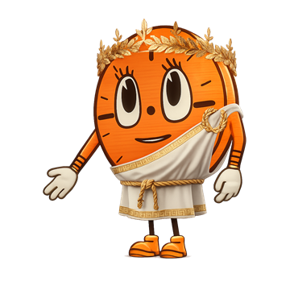

subject browse · B1 B
Ophthalmology, by bank.
Offset shelf rows provide the browsing character; the controls stay orderly.

find a bank
subject browse · B1 B
Offset shelf rows provide the browsing character; the controls stay orderly.

find a bank